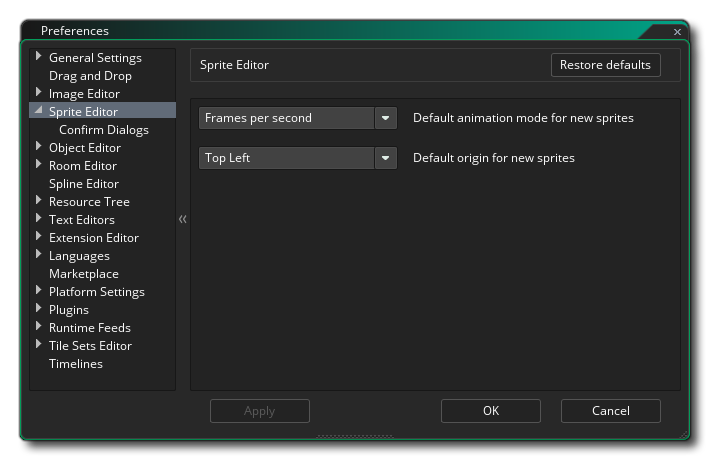
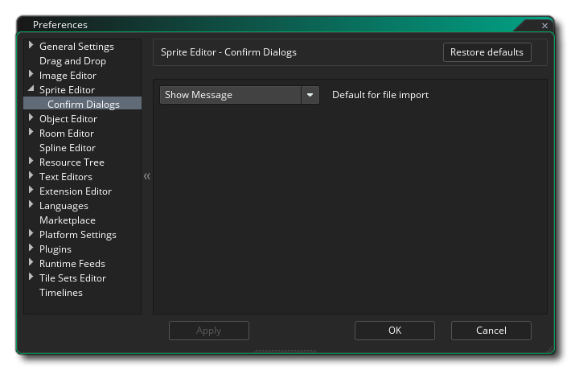

The Sprite Editor Preferences are used to define how the sprite editor looks and functions. The following option exists:
The following sub-category also exists for the Sprite Editor:
The options available here control the messages that pop up when are required to confirm an action. You can change these setting to show the message always or dismiss it with a specific action (either Yes or No) :
- Automatic response to file import: When you import a new image and one already exists, by default you will be prompted to continue importing and overwrite the existing image or cancel the operation. This option lets you suppress this message and always either cancel the import by selecting "No", or overwrite the current sprite by selecting "Yes". Default value is "Show Message".
- Automatic response to image load failure: When you import a new image and and the import fails, by default you will be shown a warning message informing you that there has been a failure. This option lets you suppress this message by selecting "Okay". Default value is "Show Message".